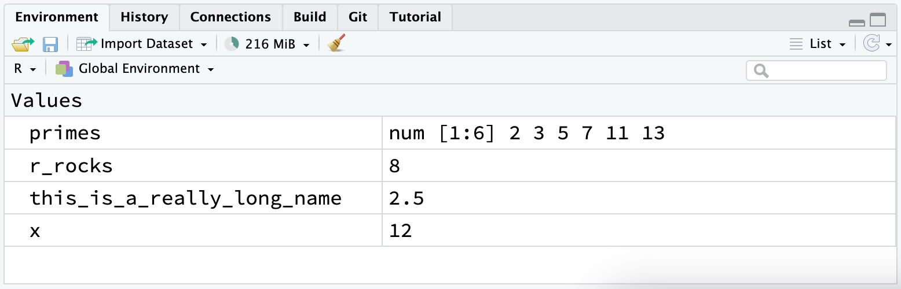

1 / 200 * 30
#> [1] 0.15
(59 + 73 + 2) / 3
#> [1] 44.66667
sin(pi / 2)
#> [1] 11 워크플로: 기초 (Workflow: basics)
이제 여러분은 R 코드를 실행해 본 경험이 조금 생겼습니다. 우리가 많은 세부 사항을 알려주지는 않았지만, 분명히 여러분은 기초를 파악했을 것입니다. 그렇지 않았다면 좌절해서 이 책을 버렸을 테니까요! R로 프로그래밍을 시작할 때 좌절감은 자연스러운 일입니다. 왜냐하면 R은 구두점에 매우 까다롭고 문자 하나만 제자리에 있지 않아도 불평을 쏟아내기 때문입니다. 하지만 약간의 좌절을 겪을 것으로 예상하더라도, 이 경험은 전형적이고 일시적이라는 사실에서 위안을 찾으세요. 이는 모든 사람에게 일어나는 일이며, 이를 극복하는 유일한 방법은 계속 시도하는 것뿐입니다.
더 나아가기 전에, R 코드를 실행하는 데 있어 탄탄한 기초를 갖추었는지, 그리고 가장 유용한 RStudio 기능 중 일부를 알고 있는지 확인해 보겠습니다.
1.1 코딩 기초 (Coding basics)
여러분이 가능한 한 빨리 플로팅을 할 수 있도록 지금까지 생략했던 몇 가지 기본 사항을 검토해 보겠습니다. R을 사용하여 기본적인 수학 계산을 수행할 수 있습니다:
할당 연산자(assignment operator) <-를 사용하여 새로운 객체를 생성할 수 있습니다:
x <- 3 * 4x의 값은 인쇄되지 않고 단지 저장될 뿐이라는 점에 유의하세요. 값을 보려면 콘솔에 x를 입력하세요.
c()를 사용하여 여러 요소를 하나의 벡터(vector)로 결합(combine)할 수 있습니다:
primes <- c(2, 3, 5, 7, 11, 13)그리고 벡터에 대한 기본 산술 연산은 벡터의 모든 요소에 적용됩니다:
primes * 2
#> [1] 4 6 10 14 22 26
primes - 1
#> [1] 1 2 4 6 10 12객체를 생성하는 모든 R 문장, 즉 할당(assignment) 문장은 동일한 형태를 갖습니다:
object_name <- value이 코드를 읽을 때, 머릿속으로 “객체 이름(object name)은 값(value)을 얻는다(gets)”라고 말해 보세요.
여러분은 수많은 할당을 할 텐데, <-를 타이핑하는 것은 고역입니다. RStudio의 키보드 단축키인 Alt + - (마이너스 기호)를 사용하면 시간을 절약할 수 있습니다. RStudio는 자동으로 <- 주변에 공백을 추가하는데, 이는 좋은 코드 포매팅 관행(formatting practice)입니다. 아무리 좋은 날에도 코드를 읽는 것은 끔찍할 수 있으므로, 눈을 편하게 해주고(giveyoureyesabreak) 공백을 사용하세요.
1.2 주석 (Comments)
R은 해당 줄의 # 뒤에 있는 모든 텍스트를 무시합니다. 이를 통해 주석(comments), 즉 R은 무시하지만 다른 사람들은 읽을 수 있는 텍스트를 작성할 수 있습니다. 우리는 코드에서 무슨 일이 일어나고 있는지 설명하기 위해 예제에 가끔 주석을 포함할 것입니다.
주석은 다음 코드가 하는 일을 간단히 설명하는 데 도움이 될 수 있습니다.
# 소수(primes) 벡터 생성
primes <- c(2, 3, 5, 7, 11, 13)
# 소수에 2를 곱함
primes * 2
#> [1] 4 6 10 14 22 26이와 같이 짧은 코드 조각의 경우 코드의 모든 줄마다 주석을 남길 필요는 없을 수 있습니다. 하지만 작성하는 코드가 더 복잡해질수록, 주석은 향후 코드에서 무슨 작업을 했는지 파악하는 데 여러분(그리고 협업자들)의 많은 시간을 절약해 줄 수 있습니다.
코드가 어떻게(how) 동작하는지나 무엇(what)을 하는지가 아니라, 코드의 왜(why)를 설명하기 위해 주석을 사용하세요. 코드의 무엇과 어떻게는 비록 지루할지라도 신중하게 읽어보면 항상 파악할 수 있습니다. 만약 여러분이 모든 단계를 주석에 설명해 놓고 나중에 코드를 변경한다면, 주석도 업데이트하는 것을 잊지 말아야 하며, 그렇지 않으면 나중에 코드로 돌아왔을 때 혼란스러울 것입니다.
어떤 작업이 왜 수행되었는지 파악하는 것은 불가능하지는 않더라도 훨씬 더 어렵습니다. 예를 들어 geom_smooth()에는 곡선의 평활도를 제어하는 span이라는 인수가 있으며 값이 클수록 더 부드러운 곡선이 생성됩니다. span의 값을 기본값인 0.75에서 0.9로 변경하기로 결정했다고 가정해 보겠습니다. 미래의 독자가 무엇이 일어나고 있는지 이해하는 것은 쉽지만 주석에 생각을 적어두지 않는 한 왜 기본값을 변경했는지 이해할 사람은 아무도 없을 것입니다.
데이터 분석 코드의 경우 주석을 사용하여 전반적인 공격 계획(plan of attack)을 설명하고 마주친 중요한 통찰을 기록하세요. 코드 자체에서 이 지식을 다시 포착할 수 있는 방법은 없습니다.
1.3 이름에 담긴 의미 (What’s in a name?)
객체 이름은 문자로 시작해야 하며 문자, 숫자, _, .만 포함할 수 있습니다. 객체 이름을 설명적으로 만들고 싶을 테니, 여러 단어를 처리하기 위한 규칙을 채택해야 합니다. 소문자 단어들을 _로 구분하는 snake_case를 권장합니다.
i_use_snake_case
otherPeopleUseCamelCase
some.people.use.periods
And_aFew.People_RENOUNCEconvention코드 스타일에 대해 논의할 ?@sec-workflow-style에서 이름에 대해 다시 다룰 것입니다.
이름을 입력하여 객체를 검사할 수 있습니다:
x
#> [1] 12다른 할당을 해보겠습니다:
this_is_a_really_long_name <- 2.5이 객체를 검사하려면 RStudio의 자동 완성 기능을 시험해 보세요. “this”를 입력하고, TAB을 누르고, 고유한 접두사가 생길 때까지 문자를 추가한 다음 Enter를 누르세요.
실수를 해서 this_is_a_really_long_name의 값이 2.5가 아니라 3.5여야 한다고 가정해 봅시다. 다른 키보드 단축키를 사용하여 이를 수정할 수 있습니다. 예를 들어 ↑를 누르면 마지막으로 입력한 명령을 불러와서 편집할 수 있습니다. 또는 “this”를 입력한 다음 Cmd/Ctrl + ↑를 눌러 해당 문자로 시작하는, 지금까지 입력한 모든 명령을 나열해 보세요. 화살표 키 세를 사용하여 이동한 다음 Enter를 눌러 명령을 다시 입력하세요. 2.5를 3.5로 변경하고 다시 실행해 보세요.
또 다른 할당을 해보겠습니다:
r_rocks <- 2^3검사해 봅시다:
r_rock
#> Error: object 'r_rock' not found
R_rocks
#> Error: object 'R_rocks' not found이것은 당신과 R 사이에 암묵적으로 맺어진 계약을 보여줍니다: R은 당신을 위해 지루한 계산을 수행해 주겠지만 그 대가로 지시 사항이 완전히 정확해야 합니다. 그렇지 않으면 찾고 있는 객체를 찾을 수 없다는 오류가 발생할 가능성이 높습니다. 오타는 중요합니다. R은 당신의 마음을 읽고 “아, r_rock을 입력했을 때 아마도 r_rocks를 의미했을 거야”라고 말할 수 없습니다. 대소문자도 중요합니다. 비슷하게 R은 “아, R_rocks를 입력했을 때 아마도 r_rocks를 의미했을 거야”라고 말할 수 없습니다.
1.4 함수 호출 (Calling functions)
R에는 다음과 같이 호출되는 대규모 내장 함수 컬렉션이 있습니다:
function_name(argument1 = value1, argument2 = value2, ...)규칙적인 숫자 시퀀스(sequences)를 만드는 seq()를 사용해보고 이왕 하는 김에 RStudio의 더 유용한 기능도 알아보겠습니다. se를 입력하고 TAB을 누르세요. 팝업 창에 가능한 자동 완성 옵션이 표시됩니다. 입력할 글자(예: q)를 추가하여 모호함을 없애거나 ↑/↓ 화살표를 사용하여 seq()를 지정하세요. 함수의 인수와 목적을 상기시키는 부동 툴팁(floating tooltip)이 나타나는 것을 확인하세요. 추가적인 도움말이 필요한 경우 F1을 누르면 우측 하단 창의 도움말 탭에 모든 세부 정보가 나타납니다.
원하는 함수를 선택했으면 TAB을 다시 한 번 누르세요. RStudio가 일치하는 여는 괄호(()와 닫는 괄호())를 자동으로 추가해 줄 것입니다. 첫 번째 인수의 이름인 from을 입력하고 값을 1과 같게 설정합니다. 그런 다음 두 번째 인수의 이름인 to를 입력하고 값을 10과 같게 설정합니다. 마지막으로 Enter를 누릅니다.
seq(from = 1, to = 10)
#> [1] 1 2 3 4 5 6 7 8 9 10함수 호출 시 처음 몇 개 인수의 이름은 종종 생략하므로 다음과 같이 다시 작성할 수 있습니다:
seq(1, 10)
#> [1] 1 2 3 4 5 6 7 8 9 10다음 코드를 입력하고 RStudio가 쌍을 이루는 따옴표에 대해서도 유사한 지원을 제공하는지 확인하세요:
x <- "hello world"따옴표와 괄호는 항상 쌍으로 와야 합니다. RStudio는 당신을 돕기 위해 최선을 다하지만 그래도 실수로 짝이 맞지 않게 될 수 있습니다. 이런 일이 발생하면 R은 다음과 같이 연속 문자(continuation character) “+”를 표시합니다:
> x <- "hello
++는 R이 더 많은 입력을 기다리고 있음을 알려줍니다. 즉, R은 아직 작업이 끝나지 않았다고 생각하는 것입니다. 대개 이는 " 또는 ) 중 하나를 잊어버렸음을 의미합니다. 누락된 짝을 추가하거나 ESCAPE를 눌러 표현식을 중단하고 다시 시도하세요.
우측 상단 창의 환경(environment) 탭은 생성한 모든 객체를 표시한다는 점에 유의하세요:

1.5 연습 문제 (Exercises)
이 코드가 왜 작동하지 않을까요?
my_variable <- 10 my_varıable #> Error: #> ! object 'my_varıable' not found자세히 보세요! (이것이 의미 없는 연습 문제처럼 보일 수 있지만 아주 작은 차이도 알아차리도록 뇌를 훈련시키면 프로그래밍할 때 보상을 받게 될 것입니다.)
다음 R 명령을 올바르게 실행되도록 각각 수정하세요:
libary(todyverse) ggplot(dTA = mpg) + geom_point(maping = aes(x = displ y = hwy)) + geom_smooth(method = "lm)Option + Shift + K / Alt + Shift + K를 누르세요. 어떤 일이 발생하나요? 메뉴를 사용하여 동일한 곳으로 가려면 어떻게 해야 하나요?
?@sec-ggsave의 연습 문제를 다시 살펴보겠습니다. 다음 코드 줄을 실행하세요. 두 플롯 중 어느 것이
mpg-plot.png로 저장되나요? 왜 그런가요?my_bar_plot <- ggplot(mpg, aes(x = class)) + geom_bar() my_scatter_plot <- ggplot(mpg, aes(x = cty, y = hwy)) + geom_point() ggsave(filename = "mpg-plot.png", plot = my_bar_plot)
1.6 요약 (Summary)
지금까지 R 코드가 어떻게 작동하는지에 대해 조금 더 알아보고 나중에 코드로 돌아올 때 코드를 이해하는 데 도움이 되는 몇 가지 팁을 배웠습니다. 다음 장에서는 중요한 변수를 선택하거나 관심 있는 행으로 필터링하거나 요약 통계량을 계산하는 등 데이터를 변환하는 데 도움이 되는 tidyverse 패키지인 dplyr에 대해 가르쳐 데이터 과학 여정을 계속해 나갈 것입니다.